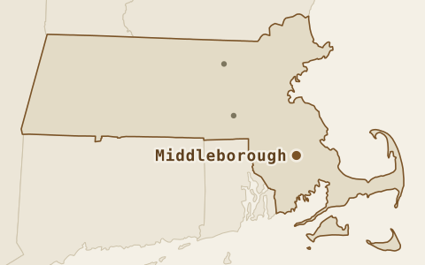
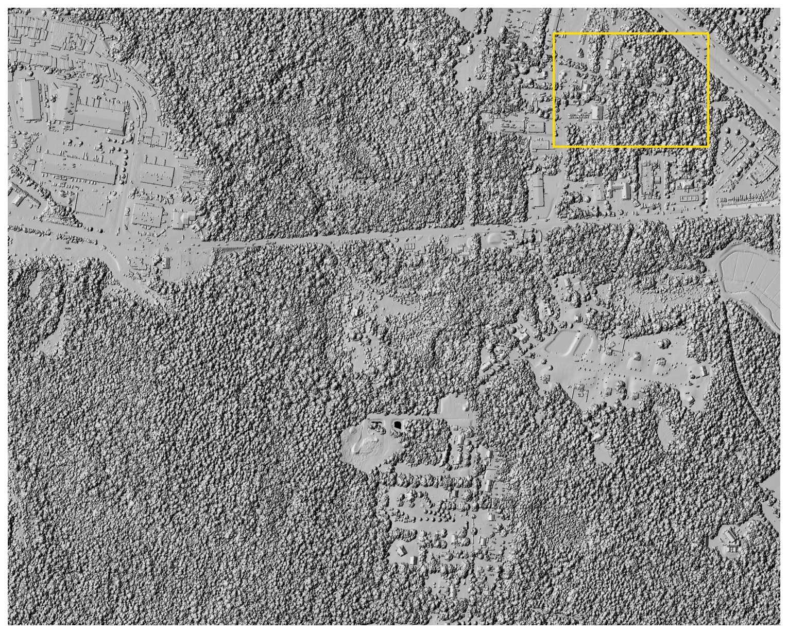
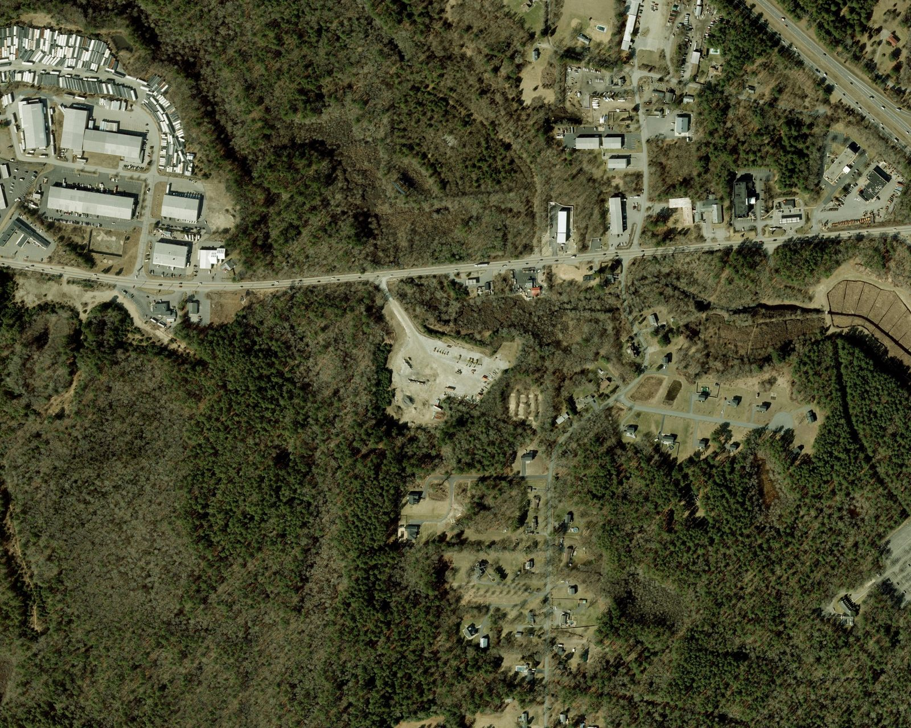
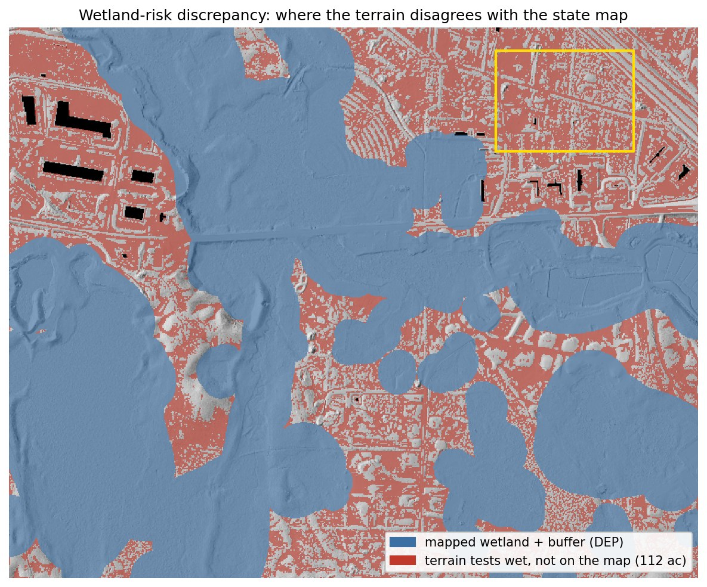
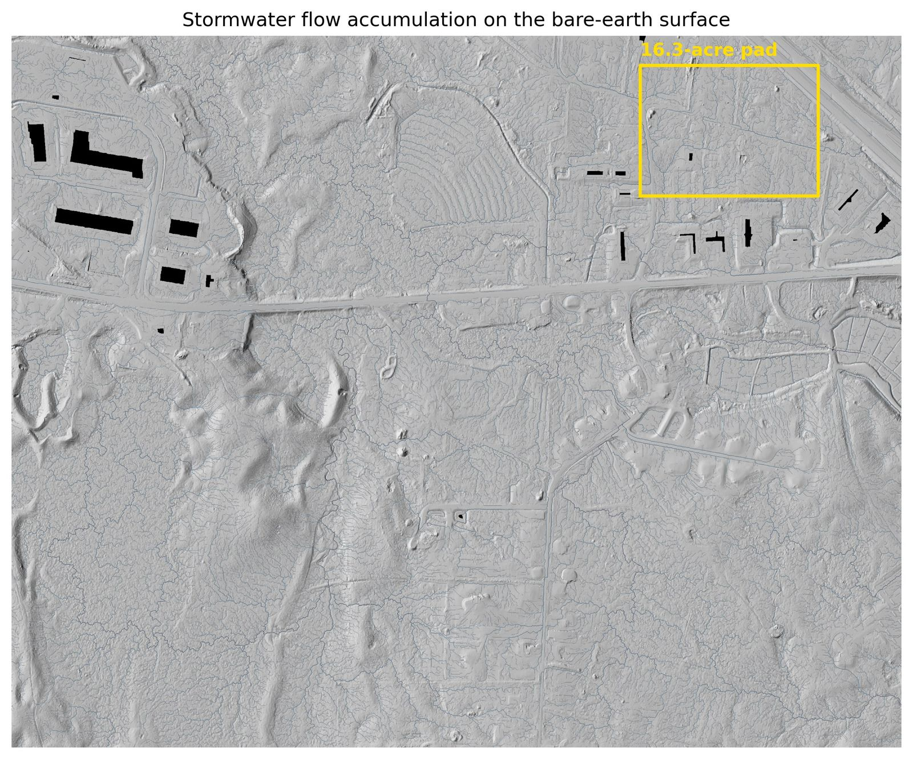

150 wooded acres.
A withdrawn warehouse.
What does the land say?
In 2023 a developer proposed 673,000 square feet of warehouse on forest near the Route 44 / I-495 interchange, and it was withdrawn in 2024. Nobody outside that process knows exactly why, but free public lidar is enough to hear most of what the land itself has to say. The short version is that the dirt work here is manageable and the water is not.

Drag the line
Left of the line is the treetop surface, roughly what a camera reconstructs when leaves hide the ground. Right of it is the bare earth, rebuilt from the laser pulses that found gaps in the canopy. Both come from the same flight, the same week and the same points, and the yellow rectangle marks the building pad measured below.


The analysis that wasn't in the hearing room
When the warehouse proposal was argued in 2023–24, most of the technical information in the room came from studies the developer commissioned. Everything on this page comes from free public data and could have been on the table for either side: how much land passes stated terrain screens, where water concentrates, what the neighbours might see, and how conceptual grading compares. The parcel is still forest and still in play, which makes this a live case study rather than a postmortem.

What the screen actually found
One pad, three surfaces
The pad is 16.3 acres, sized for the proposed warehouses and sited by an optimization pass over the constraint screens, which puts it 95.9% clear of wetlands and steep ground. My first hand-drawn attempt turned out to be half swamp, which is exactly what the screens are for. The pad is 69% forest with canopy to 23 m, and grading it to a level 12.82 m requires:
| Surface used for the estimate | Cut | Fill | Total moved | @ $20 / yd³ |
|---|---|---|---|---|
| Lidar bare earth | 42,273 | 42,164 | 84,437 yd³ | $1.69M |
| Treetop surface (canopy counted as ground) | 775,626 | 13,827 | 789,453 yd³ | $15.79M |
| 10 m national DEM (all you had before 2021) | 52,177 | 34,461 | 86,638 yd³ | $1.73M |
| Canopy error hiding in the treetop surface | 705,016 yd³ | ≈ $14.10M | ||
The old 10-meter data is the sneakier failure. Its total looks fine, but it calls the site 17,700 yd³ cut-heavy when the site actually balances, mislabels cut against fill on 7% of the pad, and is locally off by up to 2.9 m. A grading plan built on it would carry a haul-off that does not exist. It is worth checking where any comparison surface came from, too, because the "current" national DEM has quietly been rebuilt from this same 2021 lidar, which leaves the archived 2019 version as the genuine pre-2021 baseline.
A uniform ±10 cm vertical shift changes the modeled volume by ±8,628 yd³, or about ±$173k. That is a data-accuracy sensitivity rather than a construction contingency, since design, soils, water, rock and field conditions can move it much further.

More answers from the same flight
The earthwork number is the headline, but one dataset answers a stack of other early-stage questions:





What this means for the deal
| Screening item | Estimate |
|---|---|
| Earthwork, graded to balance | $1.69M ± $173k |
| Clearing, 11.2 forested acres | $34–67k |
| Access terrain flag | screened route is 333 m and peaks at 5.1%; final geometry not designed |
| Terrain-screening subtotal: modeled earthwork + clearing only | ≈ $1.74M |
The modeled terrain subtotal is lower than Hopkinton's; the open questions here are regulatory and field-based. Diligence should cover:
- Wetland delineation before the offer is priced. The pad clears the state's wetland map, but 10 of its 16.3 acres share the terrain-wetness signature of the mapped wetlands, and if the field delineation moves that line the pad moves with it.
- The vintage of any elevation data in the pro forma. The pre-2021 public DEM shows a 17,700 yd³ haul-off that is not really there, and older underwriting may still be carrying it.
- Vernal pools. The depression screen found no candidates in or near the pad, though five state-mapped potential pools sit elsewhere in the study area. Treat the pad as screened clear, pending field confirmation at permitting. One limit is worth naming: a pool that held water when the lidar was flown leaves no depression in the bare-earth surface, so this screen can point to candidates but cannot establish that none are present.
The numbers are checkable
- Data. USGS 3DEP lidar from the 2021 Central-Eastern Massachusetts acquisition, block 2, with a published accuracy of 10 cm RMSE, giving 49.5 million points for this site. Wetlands and streams come from MassGIS DEP layers with 100 ft and 200 ft buffers.
- Processing. The same PDAL pipeline as Study 01 handles ground and vegetation separation, the 0.5 m ground model, the treetop model and canopy heights. Same scripts and different coordinates, which is most of what this study set out to prove.
- Consistency. Compared with the state-published DEM from the same flight, my ground model differs by 1 mm on average and 2.0 cm RMSE over open ground. That checks processing agreement rather than independent field accuracy. The pre-2021 baseline came from the archived 2019 national DEM, after the "current" one turned out to have been rebuilt from this lidar.
- Volumes. Cell-by-cell raster math, cross-checked in QGIS to five significant figures. The cost basis is an illustrative $20/yd³ screening assumption, shown with a $10–$40 sensitivity range.
- Checking the wetness screen. As an independent check, the wetness screen was re-implemented from scratch in 2026: a topographic wetness index built separately on this study area, scored against the DEP wetland polygons, flags 110 acres of mapped-dry ground against the 112 reported here. The same test measures the trade-off, since at that threshold the index catches about half of the mapped wetland while flagging roughly three of every ten dry acres. That error rate is why this is a tool for aiming a wetland scientist rather than replacing one, and the scoring script ships in the repository.
Scope: a public-data demonstration for planning and comparison. Mapped wetlands and terrain signatures are not field delineations, and nothing here is a survey, geotechnical investigation, construction quantity, bid, or final grading design. Survey-grade or construction-facing work requires licensed control and project-specific oversight. Scripts and pipeline files are available on request. See the shared method, sources, assumptions and limitations.